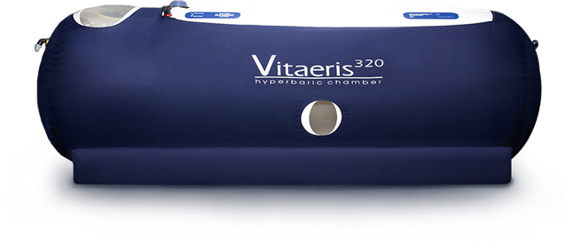
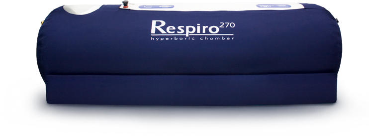
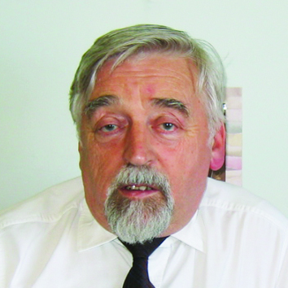
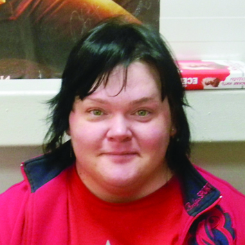

-
-
VITAERIS 320
-
Respiro 270
-
SOLACE 210

-
Respiro 270
V=0,835 м3
0,70 м
2,25 м
Модель Respiro 270Respiro 270 - Данная модель портативной барокамеры обеспечивает комфортное лечение. Идеально подходит как для домашнего использования, так и для медицинских центров.
Время компрессии 4-6 минут
Максимальное давление - 4 PSI (1,3 АТА)
Три режима работы: 1.5 PSI, 2 PSI, 4 PSI -
Solace 210
V=0,572 м3
0,56 м
2,33 м
Модель Solace 210Solace 210 – Самая компактная модель портативной барокамеры, сочетает в себе функциональность и современный дизайн. В основном применяется для домашнего лечения.
Время компрессии 3-5 минут
Максимальное давление - 4 PSI (1,3 АТА)
Три режима работы: 1.5 PSI, 2 PSI, 4 PSI -
Vitaeris 320
V=1,34 м3
0,85 м
2,36 м
Модель Vitaeris 320Vitaeris 320 – Профессиональная портативная барокамера обладает наибольшей окружностью и будет комфортна для человека любой комплекции, а также может применяться для лечения двух человек.
Время компрессии 5-8 минут
Максимальное давление - 4 PSI (1,3 АТА)
Три режима работы: 1.5 PSI, 2 PSI, 4 PSI
-
-
-
Казанцева Наталья Вениаминовна д.м.н., профессор, главный врач медицинского центра «ЛеДа – Лечение давлением»
«Баротерапия предоставляет уникальную возможность восстановления энергетического обмена и кровообращения в организме. Особенно важно восстановление мозгового и почечного кровотока, что позволяет излечивать такие тяжелые заболевания, как гипертония, инсульт, инфаркт, мигрень и многие другие»
-
Полиров Андрей Альбертович к.м.н., доцент кафедры «Хирургии и онкологии» РУДН, главный врач клиники «Союз», лауреат премии правительства Москвы в области здравоохранения
«Никакой другой метод не обеспечит ваш организм тем количеством кислорода, который необходим для полноценной и здоровой жизни. Портативная барокамера – это идеальный, естественный и безопасный способ избавиться от имеющихся заболеваний и профилактизировать возможные»
-
Самойлов Александр Сергеевич к.м.н., директор Центра спортивной медицины ФМБА России

«Портативные барокамеры помогают российским спортсменам быть на пике формы, показывать высокие результаты и увеличивать свой спортивный потенциал. Барокамера позволяет быстро восстановиться после нагрузок и максимально повысить физическую выносливость»
-
Горбунов Геннадий Александрович старший врач Арктического и Антарктического НИИ
«Мы установили портативную барокамеру на российской антарктической станции «Восток». Высота расположения станции — 3 850 метров над уровнем моря, что вызывает острую нехватку кислорода. Чтобы предотвратить горную болезнь, все полярники в качестве профилактической меры проходят сеансы в барокамере»
-
Луговая Ирина Николаевна 10-кратная чемпионка мира по пауэрлифтингу, заместитель директора Спортивно-оздоровительного центра «Надежда»
«Могу ответственно заявить, что после сеанса в барокамере спортсмен восстанавливается в четыре раза быстрее! Эффект сразу заметен – бодрость, свежесть, отличный тонус. Поэтому в плане восстановления и оздоровления, барокамера - великолепная вещь»
-
Потанина Светлана Викторовна Домохозяйка
«Раньше невозможно было представить, что барокамеру можно установить дома, но теперь это стало доступно каждому. Морщинки и синяки под глазами сразу пропали, кожа стала как у юной девушки. А детям так вообще в радость, для них барокамера и игра и польза. Мы забыли, когда простужались, иммунитет высокий, а настроение отличное!»

-